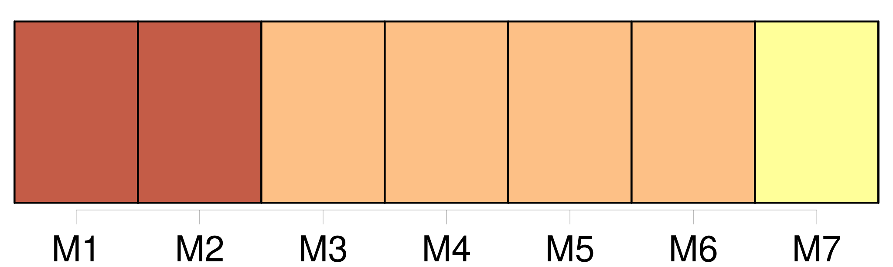

Longueur nb maillons : 7 mentions |
 |
Sa maison n'est pas très éloignée de la nôtre, et en s'aidant de [ses deux béquilles] , elle réussit à faire le chemin sans trop de fatigue. [2 phrases] Arrivée auprès de moi, Mme Lapierre jette [ses béquilles] à terre avec un geste de lassitude, comme si au lieu d'un soutien [elles] étaient pour elle un fardeau écrasant. [Ce] sont pourtant des béquilles bien tournées et faites d'un bois léger.
Le petit Jean [les] ramasse et [les] pose en travers de ma voiture, et comme pour encourager sa mère à la patience, il lui dit : [146 phrases]
[Les béquilles de Mme Lapierre] me soutinrent pendant une semaine, puis ce fut une solide canne fabriquée par oncle meunier, et que j'abandonnais à toute minute, tant j'avais hâte de me déplacer par mes propres moyens. |
|
Il est possible de télécharger la ressource sur la page Ortolang |
Si vous avez des questions ou vous voyez des erreurs, merci d'envoyer un mail à silvia.federzoni89@gmail.com |